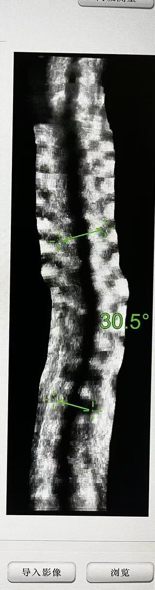
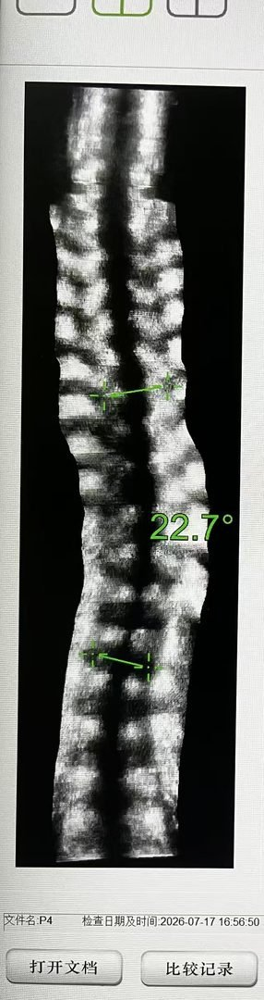
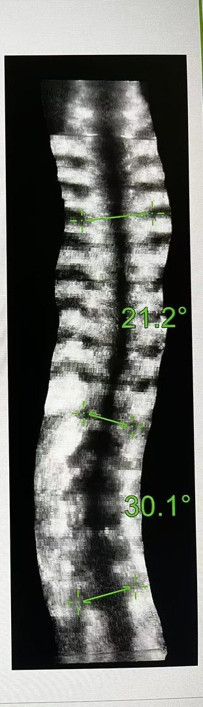
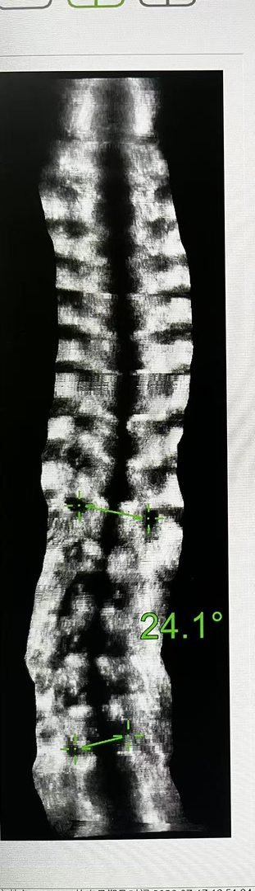

2026 年暑期 ISST 训练营学员实拍：右边为周一下午，左边为周五下午——5 天、每天 2 小时三维矫正训练的即时效果。


从左到右：周一训练前 → 周五训练后。经 5 天连续训练，躯干力线与肩髋对称性出现可见改善，学员已初步掌握矫正呼吸与自我矫正的要领。


从左到右：周一训练前 → 周五训练后。从「被动等待矫正」到「主动维持矫正」，学员在训练营中建立的自我矫正意识将延续到日常生活。
更多治疗前后对比案例（点击图片可放大查看，左右键切换）。